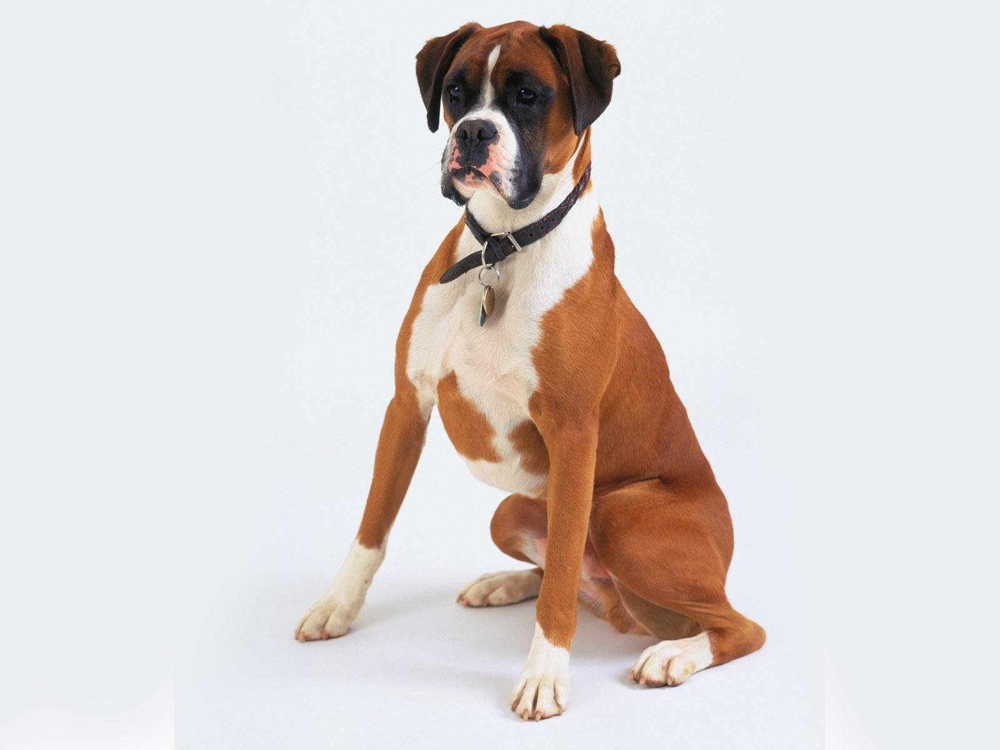
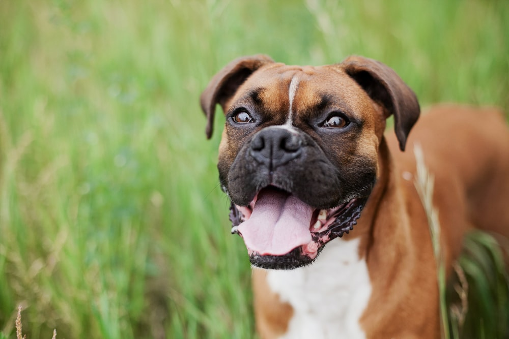
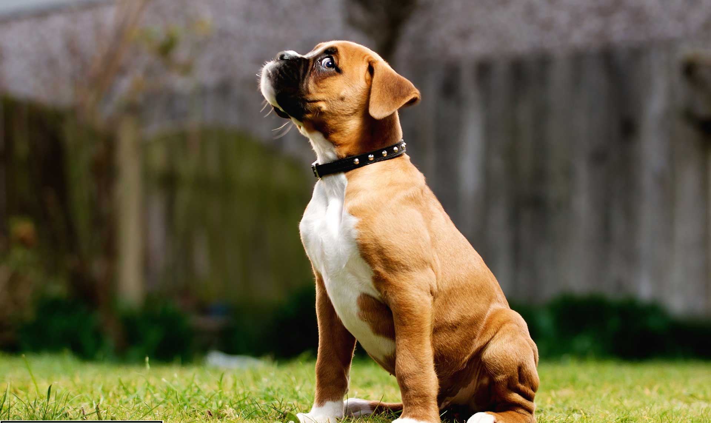

Boxer

origin
Germany
size
Small
color
Others
type
Purebred
breed group
Working (AKC:1904), Guardian Dogs (UKC)
character
Best guard
temperament
Brave
Bright
Confident
Loyal
height
22-25 inches (56-63 cm)
weight
60-70 pounds (27-32 kg)
geography
Europe
overview
The Bulldog is an ancestor of the Boxer; various terriers were also part of its make-up, which gives the breed its speed, agility and more graceful body. The term “boxer” is British, but the most recent home country for the breed is Germany. “Boxer” seems appropriate since it has a mannerism of using its front legs in combat, much as a man would in fighting. The breed was virtually ignored until World War II, when it was brought into use as a military or police dog. This helped to insure instant popularity with returning servicemen, and the breed became in demand in the United States.
history
The Rottweiler (affectionately called 'Rottie') originates in the Roman Empire, where it was used to herd cattle. The name derives from the small town of Rottweil, Germany. The Rottweiler nearly went extinct in the 1800's, but today it has come back in popularity and is used as a police dog, guard dog, herd dog, and tracker. It is a very strong, courageous, seemingly invulnerable breed. Famous fictional Rottweilers include the puppet Triumph the Insult Comic Dog from The Conan O' Brien Show and the family pet in Ferris Bueller's Day Off.
Photo Gallery


